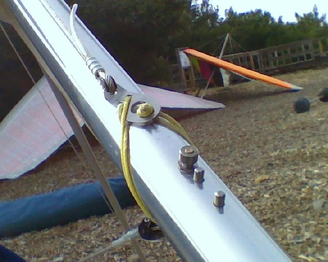
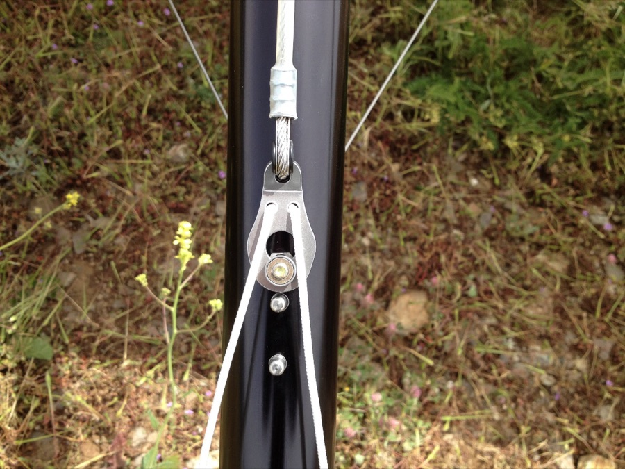

Hard questions: three the framework raises
Key idea
Aviation is inherently dangerous, and it often forgives carelessness, but capriciously, so we can’t learn safety just by watching outcomes. Unless we abandon experimental flight test, 100 percent safety is probably not possible. We are not birds. So we had better get as close to 100 percent as we can, with every tool we have.
This page is from the 2018 Gulfstream talk and Mike’s prepared answers for the 2015 Anaheim talk, with one note of 2026; it is not in the paper.
Is aviation inherently dangerous?
A well-known poster about aviation safety says:
Aviation in itself is not inherently dangerous. But to an even greater degree than the sea, it is terribly unforgiving of any carelessness, incapacity or neglect.
Mike has always loved the elegant poetry of the statement. It is so beautifully crafted that one could almost miss that it is completely untrue, wrong in just about every way such a statement could be wrong.
Take the opening phrase. What is aviation? Suspending oneself at a significant height above the ground, in a 32-foot-per-second-per-second gravitational field, typically at substantial speed, supported only by a waft of air flowing over a wing. An unsupported fall from just twenty-one feet ends at twenty-five miles per hour.
If all of this isn’t the very definition of inherent danger, then I don’t know what would be.
Aviation forgives, capriciously
“Terribly unforgiving of any carelessness” implies that any careless act, however small, should reliably bring the most dire consequences. That is not at all what happens. Most pilots know an example of egregious carelessness that led to nothing worse than a good “there I was” story.
One from hang gliding: a photo, taken after landing, of a glider that had just been flown with the cable that holds the wings in their spread position held only by a knot in a pull cord, resting in the hole of the metal tang. Had the knot slipped out of the hole in the tang, the wings would have folded together inwards. What you have then is not a hang glider but a lawn dart. The actual consequence was nothing more than some minor embarrassment on social media.


The truth is that aviation is inherently dangerous and that it often does forgive carelessness, incapacity and neglect. But it forgives capriciously, and without any sense of justice. Many egregious acts are rewarded with good story material, while sometimes the most innocent error can cost a life or an aircraft.
So we cannot simply practice aviation, casually observe the results, and learn anything meaningful about safety. If we do, we will be deceived. We have to parse the lessons more carefully and more rigorously. That is Murphy’s Corollary, and the reason for analyzing successes.
And if the poster were true, aviation would very quickly become very safe, or extinguish itself: those who made mistakes would depart at once, as lessons for the rest. It is the specific challenge of aviation safety that this is not what happens.
Is 100% safety possible?
There may be a basic, perhaps almost fatal, flaw in the whole idea. A 99 percent probability of success is not sufficient for safety, and it’s easy to conclude that even 99.9 percent is not good enough.
But we make safety decisions before the fact. How capable are we of telling a 99.9 percent chance of success, which may not be good enough, from a 99.99 percent chance, which may be? If we can’t do that reliably, don’t we need 100 percent to be safe? And if so, haven’t we just annihilated experimental flight test, and perhaps all of aviation?
Mike was asked this pretty much straight out at the SETP symposium. He had expected it, and didn’t have a good answer. In 2018 he said he still didn’t have one, and in 2026 he says he still doesn’t. What he does say is that three things are true:
- We can improve. The five hundred-odd people in the room at SETP that day suggested they believed it too.
- We may seriously underestimate the challenge. Without a deep understanding of the deceptive mathematics of probability, the seductiveness of Murphy’s Corollary and the power of the pressure to go, we cannot appreciate how hard it is to improve safety. There is no final victory, only a continuing successful battle.
- We may not be using every tool we have. That is where a rigorous, critical analysis of successful outcomes comes in.
Below: from Mike’s prepared answers for the 2015 Anaheim talk.
His prepared answer in 2015 also made clear what he was not arguing:
Unless we want to abandon experimental flight test, 100% safety is probably not possible. And beyond that, 100% safety is not a goal that I have intended to promote.
Asked at SETP in 2015 whether any risk is low enough, Mike called it the “fatal flaw” in his thesis, and answered: Questions after the Anaheim talk.
Below: from Mike’s note of October 25, 2026.
Doug “Beaker” Wickert offers a different answer in his 2018 paper on risk awareness. In his view, estimates of the probability of occurrence are essentially worthless; the focus belongs on risk awareness and consequences, and once a possible catastrophic consequence comes to light, the aim should be to eliminate that risk, however small its probability is thought to be. That lines up with Mike’s own question of whether, when the consequence is catastrophic, any probability is low enough to be acceptable. Three Random Thoughts On Safety takes up both ideas.
Were we meant to fly?
Below: from the 2018 Gulfstream talk, not in the paper.
“If God had meant man to fly, He would have given him wings.” Few aviators agree, and the usual answer, delivered with some smugness, is that we were given the intellect to invent our own. Mike argues the other side.
First, the mind of a hang glider pilot. Hang gliders are foot-launched and foot-landed, with a minimum flying speed of about 20 mph, so it’s pretty much necessary to launch and land into the wind. Downwind launches are nearly impossible; downwind landings are highly inadvisable.
Now, a crow. On a windy day, walking in his neighborhood, Mike watched a crow in gliding flight about 30 yards ahead, flying straight downwind at more than 35 mph over the ground, about ten feet up and descending toward the street. At six feet, then three, still straight downwind, his hang glider pilot’s mind was thinking, “He needs to turn now, or this is not going to end well.”
And then, at what I would have said was the last possible instant, except that it seemed to be well past the last possible instant, he put one wing up and one wing down, pivoted with perfect precision on the tip of the low wing, and turning into the wind, he put his feet down and landed with zero ground speed, without taking a step, folding his wings as he did so. And then he turned to look at me, as if to say, “What?!”
At the 1994 SETP symposium, Dr. Kenneth P. Dial presented “An Inside Look at How Birds Fly.” A fighter as aerobatic as the A-4 Skyhawk has a maximum roll rate of 720 degrees per second. The common barn swallow has a demonstrated roll rate of more than 5,000.
The birds, I think, are pretty close to 100%. The birds were meant to fly. We are not close to 100%, and likely never will be. We were not meant to fly.
And so if we choose to fly anyway, and want to be safe enough to come back and do it again tomorrow, we had better try to get as close to 100 percent as we can, and use all the tools available to get there.
Cite this page
Meier, M. (2026, November 12). Hard questions: Three the framework raises (Edition 1.0). meiersafe.com. https://meiersafe.com/questions/
Chicago and BibTeX
Meier, Mike. “Hard Questions: Three the Framework Raises.” Edition 1.0. meiersafe.com, November 12, 2026. https://meiersafe.com/questions/.
@misc{meier2026questions,
author = {Meier, Mike},
title = {Hard Questions: Three the Framework Raises},
year = {2026},
note = {Edition 1.0},
url = {https://meiersafe.com/questions/}
}
Hard questions by Mike Meier, meiersafe.com/questions/, CC BY-SA 4.0. The poster text is quoted, not licensed; the cord-and-tang photo, used with permission, and Linda’s watermelon video are not covered by this license.